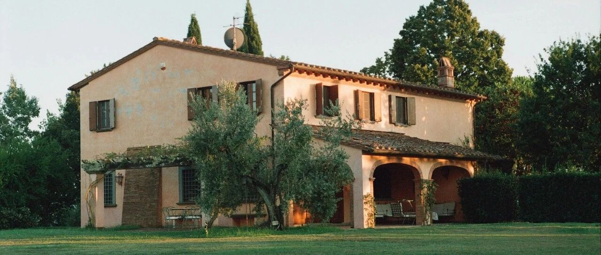

一切还是老样子~
大饼站上8.8万美元。
这段时间，机构都在拉升，除了之前的超级大户贝莱德，MicroStrategy也在这两天购买了27200枚大饼。
这样一来，其当前持仓总量达到279420枚BTC。
机构在吹风10万美金，目前这个趋势，我是看不懂了，所以暂停投资行为。
三个多月前6.8-7万时，清了大饼，将资金做了新的规划和配置。
那笔落袋的资金，10%用在了8月5日及后面几天台积电和英伟达的抄底中；5%用在了增配小孩和家庭的港险上；5%用在配置美债和meta上。
目前那笔资金，还有近80%在账户上，其中约三分一是定存，其余的是活期资金，等待配置。
抄底台积电，让目前台积电账面浮盈约38%，英伟达93捞了一把，现在看，只能后悔买少了。
目前台积电又回到了195左右，多空博弈区；英伟达145左右。
美股七巨头+台积电，整体都在我预期范围内内，偏离度很低。
之所以说整体，是因为特斯拉我把握不准，又涨了8%+，妥妥地妖。这也是我最看不懂，最无法以常规去衡量的一只。
也是我之所以要降低仓位比重的原因，看不懂的就尽量控制在自己能控制的范围内。
除了选对场地，但长期持有，再根据情况灵活调整买进卖出的做法，也是我在美股投资收益丰厚的重要原因。
资金体量大的同时，让资金适当轮动，聚焦在自己看得懂的板块上，比如科技。
我始终觉得，AI会让市场对其有个重新估值的过程，只是这个结果需要时间。
投资最需要的是耐心、资金和勇气，而不是反复横跳的急躁。
人民币汇率到7.25了，我预计7.3-7.35左右，无形的大手会出现拉一把。
不少人把握住了7-7.1这个节点，挺好的。
少听那些宏大叙事，少信那些“为你好”、“保护你”的名义，能少踩很多坑。
大饼这类资产，在某些媒体的“骗局”中一路从1000多美元，“跌”到了目前8.8万美元。
汇率从6.3一路走到7.3，回到7时，一堆媒体在那狂欢，无知又可笑。
我说这是很好的兑换节点，因为很难走出独立于宏观的行情，楼市同理。
这次自己和身边人都把握住了这个节点。
现在，它又往7.3去了。接下去要关注的是，7.3-7.35能拉多久，每年消耗多少弹药去维持。
如果消耗的弹药会突破之前3000亿刀的量，那有可能会往7.5-7.8去靠。
之前写过，很多通道正在缩紧和闭合，这个现象目前仍在持续。
海外投资机构，对我们要求要有存量证明；OCBC等也在关闭注册通道。
由于一些东西的存在，很多普通人错失了参与到全球投资的机会。
一切都是老样子，说的、做的……一切都在轮回。
当然，这对能力缺失的群体来说，也是一种“保护”。
勇敢的人享受世界，其他人可以安于现状，但不应去指责、嘲笑别人。这才是本该有的样子。
只是，很多时候，我们被各种情绪裹挟着，很难做到理性。
总有一些举动让你突然寒了心，总有一些言语让你突然酸心，总有一些态度让你突然伤了心……
所以尽力后选择随缘，人的手就那么大，握不住的东西太多了，拐个弯儿学会和自己和解。
但不能还没尽力，就直接躺平，然后找各种借口安慰自己，风霜压你两三年，两眼一闭你长眠。
富得很稳定，是优点；穷得很稳定，就是缺点。
很不幸，富往往不稳，而穷则稳得不行。
所以很多时候，需要我们提前去规划，去布局，去学习，去做自己有把握的，看得懂的。
还是那句话:“万物皆周期，任何的人和事，都不会一直在云端。在春风得意时布局，平淡了才有退路”。
就这样吧。